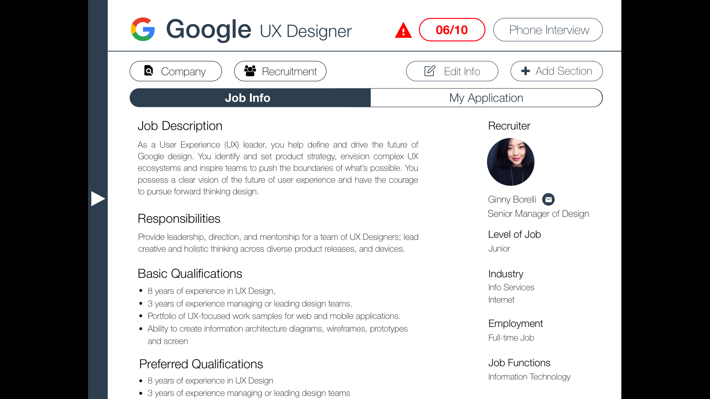
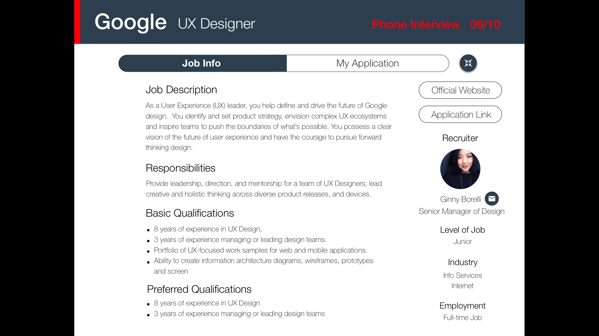
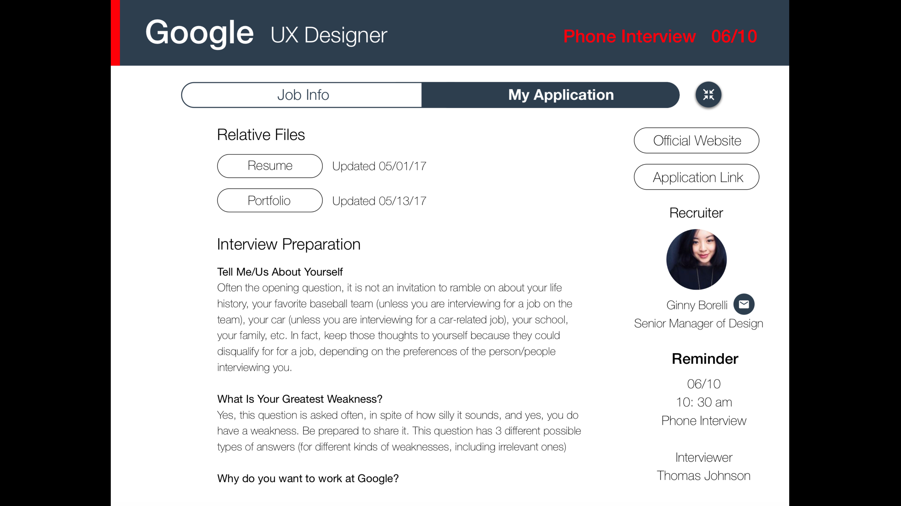
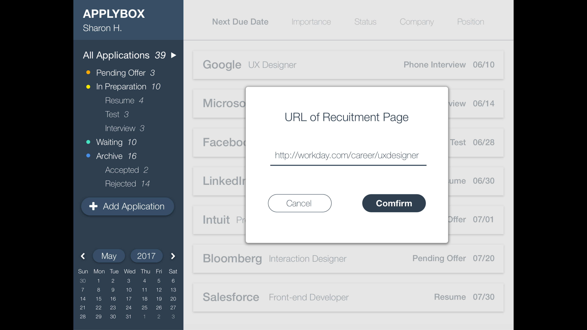
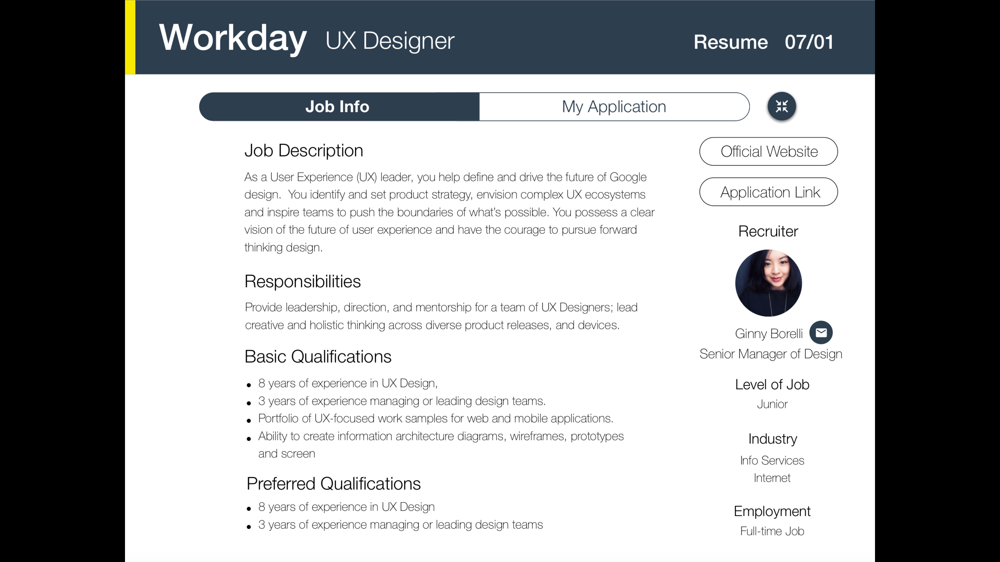

Lead User
Our lead user Sharon Huang, a senior international student in UC San Diego, is eagerly seeking for jobs including internships, part-time jobs and full-time jobs to build up her experience. At the beginning, she met a large problem on managing them because here are so many applications that it is difficult for her to keep track of every step. Sometimes, she forgot when was the application open and end, when she needed to upload the resume or portfolio, when her interview started, and etc. In order to help herself to solve those problem, she writes down all the information into one notebook and categorizes them into sections. Inspiring by her notebook, we would like to invent an app that has organized interfaces on digital devices to help her manage applications in a more effective and efficient way through intelligent reminder.
Task
Currently Sharon is applying for full-time jobs starting from fall 2017. Using an app on desktop called Application Manager, she wants to prepare the most urgent application and also keeps track the status for Facebook and Intuit. After that, she would like to start a new application for Workday.






Video